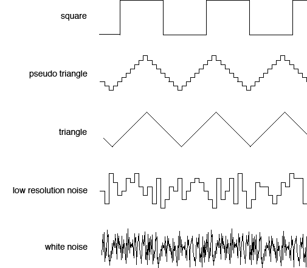
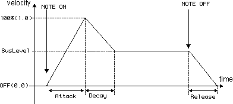

Magical
8bit Plug Audio Units Ver.
by Yokemura(YMCK) http://www.ymck.net/
|
| |
| About Magical
8bit Plug: |
| |
| Magical 8bit Plug is a plug-in style
software-synthesizer for producing primitive electronic
sounds like the old 8bit game consoles. In Macintosh
environment, it runs with AU (Audio Units)-supporting
applications: ex. Logic, Digital Performer, Garageband.
In Windows environment it runs with VSTi supporting
applications: ex. Cubase. Most of the software/hardware
synthesizers include the most primitive waveform: square
wave and pulse wave. But almost none of them include
the pseudo-triangle or the low-resolution noise, which
will most characterize the 8bit sound's unique taste.
Magical 8bit Plug will help you producing the old 8bit
sounds by providing those unique waveforms. |
| |
| Features: |
| |
- Includes 5 waveforms (square, pulse (2 kinds),
pseudo-triangle, low-resolution noise)
- ADSR envelope assignment for volume
- Supports pitch bending, bend range variable
- Frequency sweep function
|
| |
Files Included: |
| |
- readme-e.html: This file.
- magical8bitPlug3.dll: Plug-in program.
- Logo.gif, waves.gif, ADSR.gif: Image files used
in readme-e.html
- magical8bitPlugSample.mp3: mp3 audio of the sample
song
- magical8bitPlugSample.mid: midi data source of
the sample song
|
| |
Install: |
| |
| Put magical8bitPlug.component into
the certain folder.
The destination folder is:
- in case you want all users can use
Macintosh HD > Libraries > Audio > Plug-Ins
> Components
- in case you want only you can use
Uninstall:
Delete magical8bitPlug.component from the folder you
installed. |
| |
How To Use: |
| |
Getting started
Launch your host application. Then assign Magical 8bit
Plug to a certain software-instrument track.
See your manuals of your application for details.
Setting parameters
You can control the parameters below from the plugin's
window.
- OscKind: select the waveform from the pull down
menu
- square: The most primitive digital waveform made
by only low/high of the voltage
- 25%pulse/12.5%pulse: Also primitive waveforms
made by only low/high's. But the time ratio of low's
and high's are different: 1:3 for 25%pulse , 1:7
for 12.5%pulse
- triangle: The pseudo-triangle waveform. Includes
lots of anti-aliasing noise due to the low control
resolution of 8bit machines.
- noise: The low-resolution noise. A kind of white
noise, but much more rougher than ordinary white
noise because of the low control resolution of 8bit
machines
|
| |
|  |
| |
Volume: The volume control.
This plugin may sound louder than other plugins, especially
when playing in polyphony. In such cases, assign the
suitable volume with this control.
Attack, Decay, SusLevel, Release: The volume
envelope assignment.
Attack: the time period from a key is pressed to the
volume gets to 100%
De cay: the time period the volume gets from 100%
to suslevel
SusLevel: the volume sustained until the key is released
Release: the time period from key is released to the
volume gets to 0
Bend Range: Assign the range of bending
2.0 for 1 whole tone , 12.0 for 1 octave.
Sweep Switch: Assign the behavior of the sweep
function
off: no sweep
negative: the frequency goes down as time elapses
positive: the frequency goes up as time elapses
Sweep Time: The speed of sweeping
1.0 means 1 second for 1 octave. |
| |
|  |
| |
How to make
it "sound real": |
| |
You may need some tips if you want
to make your songs sound more like 8bit.
For example, the following may be useful for making
the sound of the N-lettered console. Of course, if you
don't like to make it so, please ignore ;)
Tips of song arrangement
- Number of polyphonic
square and pulse waves use common 2 channels.
triangle and noise have 1 channel each.
So, as summary, keep the following.
square / 25%pulse / 12.5% -> 2 polys as total.
triangle -> mono
noise -> mono
- Velocity
Make velocity constant will sound more like 8bit.
Most of the old games didn't use velocity, because
it was a bit bothering to assign the vel value one
by one at that time.
Tips of plugin settings
- N-console's triangle channel does not designed
to handle volume envelope.
(using very special technique, it'll be possible,
though)
So, keep Suslevel=1.0 will be better.
- Please note the notes in release phase also occupy
the oscillator channel.
That is, Setting a long release time may increase
the polyphony without notice,
which makes the sound not like 8bit.
So, it's better to set the release to 0. Or, place
the next note after the
previous note is completely faded away.
- However, using pseudo-triangle waveform with release=0
will cause the click noise when releasing. To avoid
it, set the Release=0.01. |
| |
About The
Sample Song: |
| |
For your information, we included
.mid source file besides .mp3 file.
Try importing it to your application and see how it
works.
As .mid file does not include the information of
plugin settings,
please set the parameters of each tracks by yourself
to play the same sound as .mp3 sample.
* This song does not use sweep function, so leave
SweepSwitch off for each tracks.
Track1:
OscKind = square
Volume = 0.30
Attack = 0.00
Decay = 0.00
SusLevel = 1.00
Release = 0.00
BendRange = 8.4
Track2:
OscKind = triangle
Volume = 0.50
Attack = 0.00
Decay = 0.00
SusLevel = 1.00
Release = 0.01
BendRange = 2.0
Track3:
OscKind = noise
Volume = 0.25
Attack = 0.00
Decay = 0.05
SusLevel = 0.51
Release = 0.00
BendRange = 2.0
Track4:
OscKind = noise
Volume = 0.25
Attack = 0.00
Decay = 0.06
SusLevel = 0.00
Release = 0.00
BendRange = 2.0 |
| |
Copyrights: |
| |
This plugin is free software.
Yokemura(YMCK) owns the copyright.
Redistribution and sales for commercial use is prohibited.
Please consult us about non-commercial distribution.
Copyright 2005 Yokemura (YMCK) all rights reserved. |